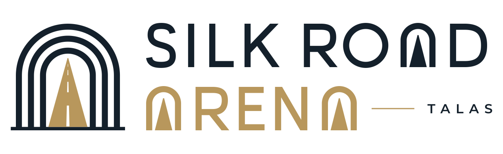

Stadiums
The grounds of the 2026 Irad League. The Silk Road Arena in Talas is also the home of the national team; the Irad Central Sports Complex in Talas hosts the national futsal cup.

Silk Road Arena
Opened in 1956 as the Dinamo Stadium and rebuilt in 2014 by the Talas Commercial Development Group. Home of Tulpar Talas and of the national team.
NurGaz Stadium
Opened in 1958 as the Neftyanik Stadium and renamed in 1998. Home of Neftchi Nurzhan. Venue of the final round's Kara-Ak derby on 31 October 2026.
Lokomotiv Stadium
The railway workers' ground by Nurzhan station. Home of Temirjolchu Nurzhan.
Dastgoh Stadium
The Nurzhanmash works ground in Nurzhan's Dastgoh district. Home of Dastgoh Nurzhan.
Iyık Janyl City Stadium
The municipal ground in the Lower Town. Home of FC Iyık Janyl.
Attelkom Park
Attelkom's ground in the western corridor of Talas. Home of Attelkom Talas.
TSU Stadium
On the campus of Talas State University. Home of Universitet Talas and of the university's women's team.
Shakhtyor Stadium
Built for the coal miners' team of Tash-Kömür. Home of Naryn Tash-Kömür.
Kara-Buura District Stadium
The district ground in Kyzyl-Adyr. Home of Kara-Buura.
Kombinat Stadium
The antimony combine's ground at the Chatkal works settlement. Home of Surma Chatkal.